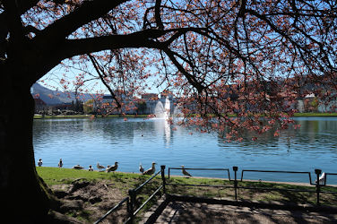
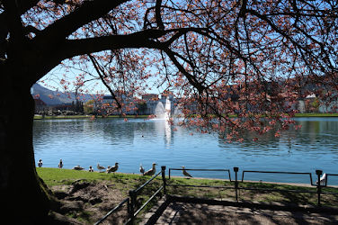
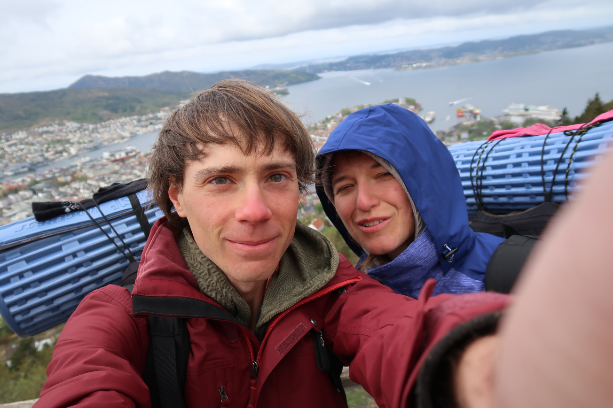
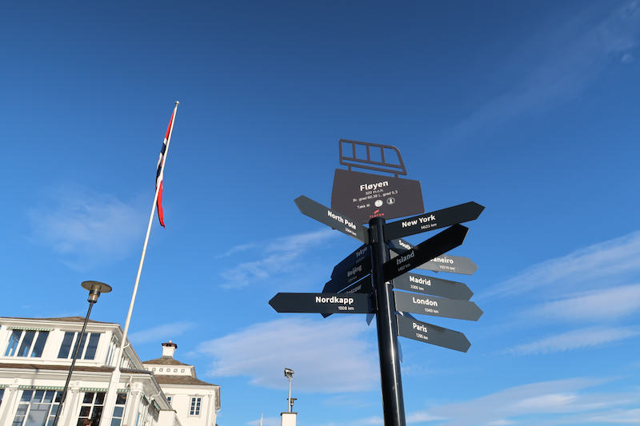

Voyage à Bergen en mai 2017
Depuis quelques semaines, j’ai envie de bouger, de voyager. Mauvais timing, puisque nous sommes piégés chez nous à cause du Covid-19. Je vais donc profiter de cette période de confinement pour parler un peu des voyages des dernières années. Cela me permettra de m’en souvenir quand je revisiterai ce journal.
Ce premier article sera consacré au voyage le plus ancien (sans parler de la Roumanie qui remonte vraiment à trop loin maintenant), à Bergen, en Norvège, en mai 2017.
Aéroport
C’était la première fois que nous allions prendre l’avion depuis un si grand aéroport (pour la Roumanie, nous étions partis de Beauvais). Ça marque ! Nous avons roulé jusqu’à l’aéroport Roissy – Charles De Gaulle, ou plus précisément jusqu’au parking où nous devions laisser la voiture durant le voyage. À 5 h du matin, nous prenions la navette qui nous amena directement à la bonne porte. Dieu merci, car rouler à l’aéroport est cauchemardesque. L’endroit est immense, à faire peur. Il y a tellement de portes d’embarquement ! Toute une aventure ^^.
Le vol n’était pas trop long. Nous avons fait une escale à Londres. Tous ces gens… Nous ne sommes pas sortis au grand jour. Piste d’atterrissage, tunnel, navette, hall d’attente, somnolence sur des sièges inconfortables, restaurant, tunnel, nouvel avion.
Nous sommes arrivés à Bergen, dans un petit aéroport respectable. Nous avons directement pris le bus pour rejoindre le centre-ville. Début des vacances.
Bergen
Nous avons tout de suite été très surpris par l’ampleur de la ville et des infrastructures en béton. Nous imaginions la Norvège comme un pays propre et écologique !
Finalement, nous avons rejoint le centre et nous sommes directement allés à Fløyen, petite montagne surplombant la ville avec un joli belvédère pour contempler les fjords. Quelques biquettes sont venues nous enquiquiner pendant notre pique-nique !
Nous avons ensuite passé une semaine sous un soleil radieux, comme si nous étions prisonniers hors du temps. Il faisait beau, chaud, nous campions au bord d’un lac, dans les bois, au sommet des montagnes. Nous faisions des randonnées géniales et nous réveillions au-dessus des nuages, à l’aube. Les matins étaient frais, nous en profitions pour déguster le « tout doux tout chaud », à savoir un Kanelbullar (brioche à la cannelle) accompagné d’un chocolat chaud. C’était magique. La petite boutique du belvédère vendait aussi des glaces délicieuses. L’air était sec et pur, il y avait des joggers partout. Nous étions bien.
Et en bas de la montagne, en ville, nous avons visité des maisons traditionnelles et quelques musées vikings, ainsi qu’une magnifique église ; nous avons dégusté un excellent fish and chips, des burgers végétariens et des pizzas qui nous ont initiés aux galettes de légumes ! Nous avons aussi pu nous rendre dans une bibliothèque disposant d’un accès au wifi. Le grand confort.
 

Une nuit, le vent du nord est arrivé. Il soufflait dans les grands pins à nous faire dresser les poils sur la nuque. Le lendemain il pleuvait et nous étions gelés. Nous avons été chanceux, nous n’avons eu à subir cette météo que durant deux jours. Deux jours qui suffirent néanmoins à nous apprendre que notre tente 4 saisons n’était pas si étanche que cela.
Le retour
Camper et vivre un peu à la dure n’est pas de tout repos. La fin du séjour ayant été ponctuée par le froid et la pluie, je crois que nous étions contents de rentrer.
À l’aéroport de Bergen, nous avons pourtant cru que nous ne pourrions pas repartir. La carte d’identité (nous n’avions pas de passeports) ne passait plus au scanner des contrôles ! Le type a essayé plusieurs fois, il nous a montré que lorsqu’il mettait la carte dans son scanner, l’image ressortait noire, comme si elle n’était pas valable. Il nous parlait dans un anglais approximatif et nous lui répondions avec le même langage. Nous étions stressés au plus haut point. À un moment il nous a parlé d’aller « au bureau » pour régler le problème, et nous avons pensé que nous allions rester coincés à l’aéroport de Bergen, à essayer d’expliquer à des policiers pourquoi notre carte tout à fait valide à l’aller, ne passait plus au retour. J’ai demandé au monsieur si nous devions rester, pour qu’il reformule, pour être certains que nous avions bien compris. Et, ô soulagement, il m’a dit que non, qu’il nous faudrait aller « au bureau » chez nous, en France, pour refaire la carte ! Nous sommes finalement rentrés chez nous, par le même chemin qu’à l’aller.
Quel choc cependant de constater la différence entre la France et la Norvège. Retour à Roissy, avec sa morosité, sa nervosité et surtout, son air étouffant et lourd, chargé de fumées de cigarettes et de pots d’échappement. Après plus de 8 jours passés dans une autre dimension, au grand air dont les moindres pores de notre peau s’étaient chargés, nous nous sommes sentis plutôt mal.
